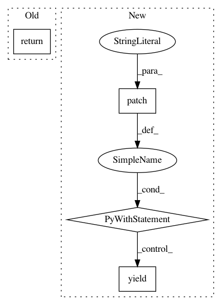

0d699bb768b5f35bbf34b9346166072066b30a29,tests/components/netatmo/conftest.py,,mock_sensor_entry_fixture,#Any#Any#,82
Before Change
await hass.config_entries.async_setup(config_entry.entry_id)
await hass.async_block_till_done()
return config_entry
@pytest.fixture(name="camera_entry")
async def mock_camera_entry_fixture(hass, config_entry):
After Change
@pytest.fixture(name="sensor_entry")
async def mock_sensor_entry_fixture(hass, config_entry):
Mock setup of sensor platform.
with patch("time.time", return_value=TEST_TIME), selected_platforms(["sensor"]):
await hass.config_entries.async_setup(config_entry.entry_id)
await hass.async_block_till_done()
yield config_entry
@pytest.fixture(name="camera_entry")
async def mock_camera_entry_fixture(hass, config_entry):
Mock setup of camera platform.
with selected_platforms(["camera"]):
In pattern: SUPERPATTERN
Frequency: 4
Non-data size: 4
Instances
Project Name: home-assistant/home-assistant
Commit Name: 0d699bb768b5f35bbf34b9346166072066b30a29
Time: 2021-03-23
Author: cgtobi@users.noreply.github.com
File Name: tests/components/netatmo/conftest.py
Class Name:
Method Name: mock_sensor_entry_fixture
Project Name: dnouri/skorch
Commit Name: 47b82e961975a2d7da486f8c83ec4697b9893ad5
Time: 2017-07-31
Author: benjamin.bossan@ottogroup.com
File Name: inferno/tests/test_callbacks.py
Class Name: TestPrintLog
Method Name: print_log_cls
Project Name: home-assistant/home-assistant
Commit Name: e8710002b119845b6833df4af876135ef7e1f2bb
Time: 2020-04-15
Author: nick@koston.org
File Name: tests/components/homekit/conftest.py
Class Name:
Method Name: hk_driver
Project Name: dnouri/skorch
Commit Name: 53ef00376510ee9ba4506918db06b25dad4a7ea4
Time: 2017-07-31
Author: benjamin.bossan@ottogroup.com
File Name: inferno/tests/test_callbacks.py
Class Name: TestBestLoss
Method Name: best_loss_cls